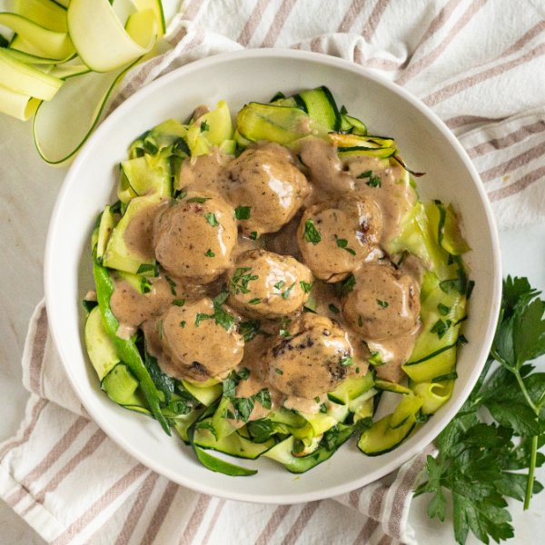

Turkey Meatballs with Baked Zucchini Noodles, Cream Sauce & Parsley

Nutrition (per serving)
684.3 kcalCalories
45 gProtein
25.6 gCarbs
46.4 gFat
Full nutrition table
| Calories | 684.3 kcal |
| Total fat | 46.4 g |
| Saturated fat | 19.4 g |
| Trans fat | 1 g |
| Cholesterol | 280.7 mg |
| Sodium | 344.4 mg |
| Carbohydrates | 25.6 g |
| Fiber | 4.5 g |
| Sugars | 10.6 g |
| Protein | 45 g |
| Potassium | 1445.5 mg |
| Calcium | 191.2 mg |
| Iron | 5.5 mg |
| Vitamin A | 1710.9 IU |
| Vitamin C | 73.6 mg |
| Vitamin D | 57.9 IU |
Cookware
Ingredients
- 8 fl ozchicken or vegetable broth
- 2eggs
- 1 ½ lbground turkey
- 8 fl ozheavy whipping cream
- 1 small bunchItalian (flat-leaf) parsley
- 6 mediumzucchini squash
- black pepper
- cloves, ground
- Dijon mustard
- extra virgin olive oil
- garlic powder
- nutmeg, ground
- onion powder
- oregano, dried
- panko bread crumbs
- salt
- Worcestershire sauce
Steps
- Preheat oven to 400°F.
- Wash, dry, and trim zucchini; run a vegetable peeler along the length of the zucchini to make ribbons. Transfer to a large baking sheet pan, drizzle with oil, and season with salt and pepper; toss to combine and spread out in an even layer.6 medium zucchini squash
2 tsp extra virgin olive oil
½ tsp salt
¼ tsp black pepper - Place baking sheet in the oven (it doesn't have to be fully heated), and bake, tossing halfway through, until zucchini is tender, about 15 minutes. Remove from oven.
- Meanwhile, wash, dry, and shave parsley leaves off the stems; discard stems and mince the leaves. Place half in a medium bowl (reserve remaining parsley for serving).1 small bunch Italian (flat-leaf) parsley
- Add turkey, bread crumbs, eggs, and spices to the bowl with the parsley; use your hands to combine. Using a tablespoon measure, form the mixture into rounded meatballs and place on a plate.1 ½ lb ground turkey
1 cup panko bread crumbs
2 eggs
1 tsp salt
1 tsp garlic powder
1 tsp onion powder
½ tsp oregano, dried
¼ tsp nutmeg, ground
¼ tsp cloves, ground
¼ tsp black pepper - Preheat a large ovenproof skillet over medium-high heat.
- Once the skillet is hot, add oil and swirl to coat the bottom. Add meatballs and cook, turning often, until browned on all sides, 3-4 minutes (the meatballs will not be cooked all the way through). Transfer meatballs to a clean plate. (Reserve skillet with drippings for next step.)4 tsp extra virgin olive oil
- Return skillet (with drippings) to medium heat. Add broth, cream, Worcestershire, Dijon, and salt. Whisk to combine the sauce and bring to a boil over high heat. Once boiling, reduce heat to low and simmer, stirring occasionally, until sauce has thickened, 4-5 minutes.8 fl oz (1 cup) chicken or vegetable broth
8 fl oz (1 cup) heavy whipping cream
2 tsp Worcestershire sauce
1 tsp Dijon mustard
1 tsp salt - Return meatballs to the skillet along with any juices from the plate. Gently stir to cover with sauce.
- Place skillet in the oven and bake until meatballs are cooked through, 5-7 minutes. Remove from oven.
- To serve, divide zucchini noodles, meatballs, and sauce between plates. Top with remaining parsley and enjoy!